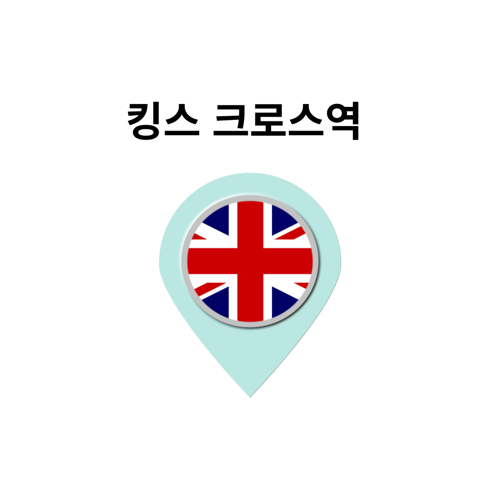
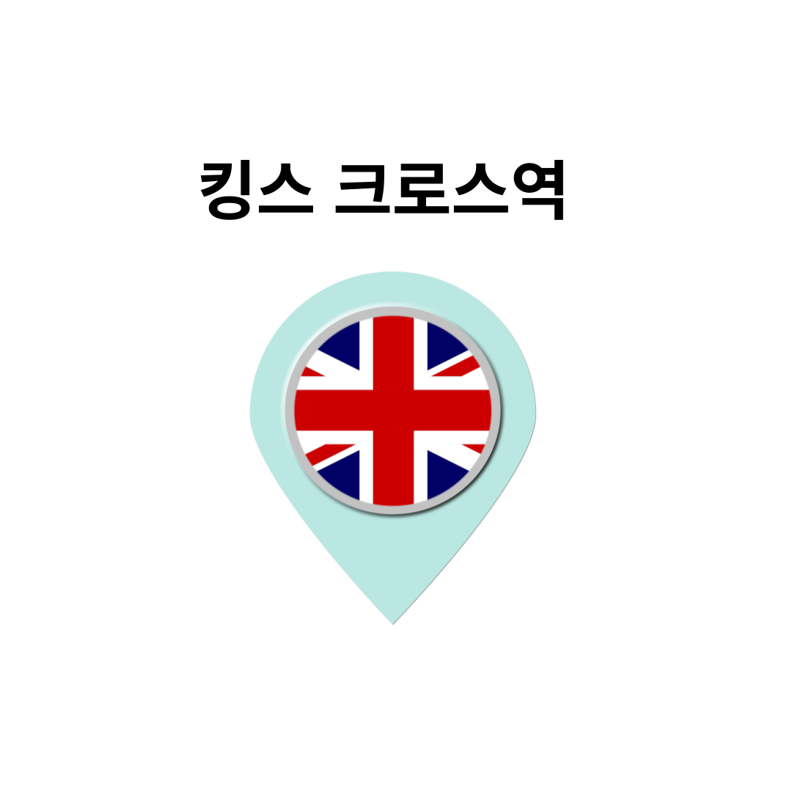
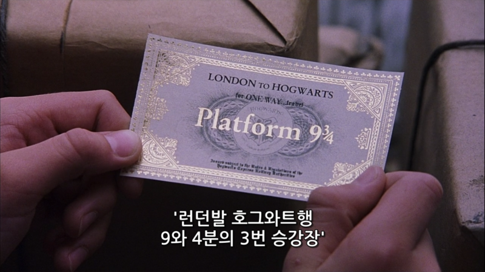
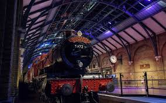

킹스 크로스역
영화 장면
 
해리포터가 처음 호그화트르 입학하던 날 승강장을 찾지 못해 해맸던 장소입니다.
실제 킹스 크로스역 4번 승강장에서 해당 장면을 찰영했다고 합니다.
영화 팬들을 위해 4번과 5번 승강장 사이에 9와 3/4 플랫폼을 만들고 카트를 설치해다고 합니다.
그린핀도르, 후플푸프, 슬리데린, 레번클로 머플러도 준비되어 있다고 하니 착용하고 인생샷 찍어보세요.
호그와트 익스프레스가 킹스 크로스역을 떠나서 호그와트로 가는 길은 Fort William 과 Mallaiq 를 잊는 기찻길입니다.
또한, 도착지인 영화속 Hogsmeade Station의 실제 촬영 장소는 Goathland Station in North Yorkshire 입니다.
킹스 크로스역 해리포터 샵


킹스 크로스역안에 4번과 5번 승강장 사이에 해리포터샵이 위치해있다.
운영 시간: 오전 8시 ~ 오후 10시
위너브라더스 해리포터 스튜디오에 있는 물건들과 이곳 킹스 크로스역에 있는 물건 종류가 다르다.
만약 해리포터 스튜디오와 이곳 두 곳 모두 방문한다면 어느 곳에 어떤 제품이 있는지 확인하고 오기를 추천합니다.
킹스 크로스역 위치
Address:Euston Rd., London N1 9AL England